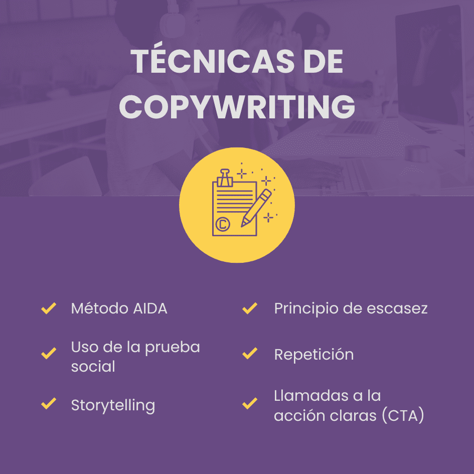

¿Qué es el copywriting y por qué es importante en el diseño web?
El copywriting en el diseño web es clave para atraer y convertir visitantes en clientes, ya que crea textos persuasivos que mejoran la experiencia del usuario, refuerzan la identidad de marca y optimizan el SEO. Un buen copy facilita la navegación, destaca la propuesta de valor y diferencia un negocio de la competencia, haciendo que el sitio no solo sea visualmente atractivo, sino también efectivo en ventas y comunicación.

¿Cuál es la diferencia entre copywriting y UV writing?
El copywriting es una técnica de escritura persuasiva utilizada en marketing y publicidad para captar la atención, generar interés y motivar a la audiencia a realizar una acción específica, como comprar un producto o suscribirse a un servicio. Por otro lado, el UV writing (Unique Value Writing) se centra en expresar de manera clara y efectiva la propuesta de valor única de una marca, producto o servicio, destacando lo que lo hace especial o diferente frente a la competencia. Mientras el copywriting busca persuadir y emocionar, el UV writing se enfoca en comunicar de forma directa los beneficios distintivos de una oferta.
¿Como influye el tono y la voz de la marca en el copy de una página web?
El tono y la voz de la marca en el copy de una página web influyen en cómo se percibe y conecta con la audiencia. La voz representa la personalidad constante de la marca, mientras que el tono varía según el contexto y el mensaje. Un tono adecuado puede hacer que el copy sea más atractivo, confiable y alineado con los valores de la marca, generando una mejor experiencia para el usuario y fortaleciendo su identidad en el mercado.
¿Qué técnicas de copywriting pueden mejorar la conversación de una página web?
Para mejorar la conversión de una página web, el copywriting debe ser claro, persuasivo y alineado con la audiencia. Técnicas efectivas incluyen el uso de títulos impactantes, mensajes concisos y llamados a la acción (CTA) atractivos. La personalización del mensaje y el storytelling ayudan a conectar emocionalmente con los usuarios, mientras que la escasez y la urgencia generan una sensación de exclusividad y necesidad. Utilizar un lenguaje conversacional hace el contenido más cercano, y el respaldo de números, datos y testimonios refuerza la credibilidad. Además, realizar pruebas A/B permite optimizar el copy según el comportamiento del usuario. Mantener la coherencia con la voz de la marca fortalece la identidad y genera confianza, contribuyendo así a una mayor conversión.
¿Como se equilibra el texto con el diseño visual para mejorar la experiencia del usuario?
El equilibrio entre texto y diseño visual es clave para mejorar la experiencia del usuario en una página web. Un copy claro y conciso debe integrarse con un diseño limpio y atractivo que facilite la lectura y la navegación. El uso estratégico de jerarquías tipográficas, espacios en blanco e imágenes refuerza el mensaje sin sobrecargar la interfaz. Además, los llamados a la acción (CTA) deben destacar visualmente para guiar al usuario de manera intuitiva. Una armonía entre ambos elementos garantiza una experiencia fluida, atractiva y efectiva.

¿Cuáles son los errores mas comunes en el copy de una página web y como evitarlos?
Los errores más comunes en el copy de una página web incluyen el uso de lenguaje confuso o técnico, que puede dificultar la comprensión del mensaje; enfocarse demasiado en la empresa y no en los beneficios para el usuario, lo que hace que el contenido pierda relevancia; la falta de llamadas a la acción claras, lo que dificulta que los usuarios sepan qué hacer a continuación; y textos largos y monótonos, que pueden abrumar al lector. Para evitarlos, es importante escribir de manera clara y accesible, centrarse en las necesidades del usuario, incluir CTAs visibles y usar párrafos breves y escaneables.

¿Como se puede optimizar el copy para mejorar el SEO sin sacrificar la claridad del mensaje?
Para optimizar el copy para SEO sin sacrificar la claridad, es importante integrar de manera natural palabras clave relevantes a lo largo del texto, sin forzarlas. Utilizar encabezados y subtítulos claros mejora la legibilidad y organiza el contenido. También es útil incluir enlaces internos y externos que proporcionen valor al lector. Al mismo tiempo, asegúrate de mantener un tono conversacional y enfocado en el usuario, evitando el exceso de optimización que pueda hacer el texto artificial o difícil de entender. Además de las estrategias anteriores, otra forma de optimizar el copy es asegurarse de que el contenido sea relevante y responda directamente a las preguntas o necesidades del usuario, lo cual aumenta el tiempo de permanencia en la página, un factor importante para SEO. Utilizar metadescripciones atractivas y claras también es esencial para mejorar el CTR (Click Through Rate). Incluir contenido multimedia relevante, como imágenes o videos, optimizados con texto alternativo adecuado, también contribuye al SEO sin perder la claridad del mensaje.
¿Qué papel juega el storytelling en el copywriting web?
El storytelling en el copywriting web juega un papel crucial al conectar emocionalmente con los usuarios, haciendo que el contenido sea más memorable y atractivo. A través de una narrativa envolvente, se pueden presentar problemas y soluciones de una manera que resuene con las experiencias del público objetivo. Además, el storytelling ayuda a humanizar la marca, creando una relación de confianza con los usuarios, lo que aumenta las posibilidades de conversión. Al integrar historias relevantes y auténticas, el mensaje se vuelve más persuasivo y genera un impacto duradero.
¿Como adaptar el copy a diferentes formatos y dispositivos (movil, desktop, etc.)?
Adaptar el copy a diferentes formatos y dispositivos implica ajustar el tono, la longitud y la estructura del contenido según el contexto del usuario. En dispositivos móviles, el copy debe ser más breve y directo, utilizando frases cortas y claras para facilitar la lectura en pantallas pequeñas. En desktop, se puede incluir más detalles y párrafos más largos, ya que los usuarios tienen más espacio para leer. Además, es importante asegurarse de que los llamados a la acción (CTAs) sean visibles y fáciles de interactuar en cualquier dispositivo, adaptando el diseño para ofrecer una experiencia fluida y consistente.
¿Cuáles son las herramientas y recursos mas útiles para mejorar el copywriting en diseño web?
Algunas de las herramientas más útiles para mejorar el copywriting en diseño web incluyen editores de texto como Grammarly o Hemingway Editor, que ayudan a pulir la gramática, el estilo y la claridad del contenido. Para la investigación de palabras clave, herramientas como SEMrush o Google Keyword Planner son esenciales para optimizar el SEO sin perder la naturalidad del mensaje. Plataformas como CoSchedule Headline Analyzer permiten crear títulos llamativos y efectivos. Además, herramientas de colaboración como Google Docs o Trello facilitan el trabajo en equipo, y recursos visuales como Canva ayudan a complementar el copy con imágenes atractivas. Utilizar estas herramientas asegura un copy claro, persuasivo y optimizado para la web.